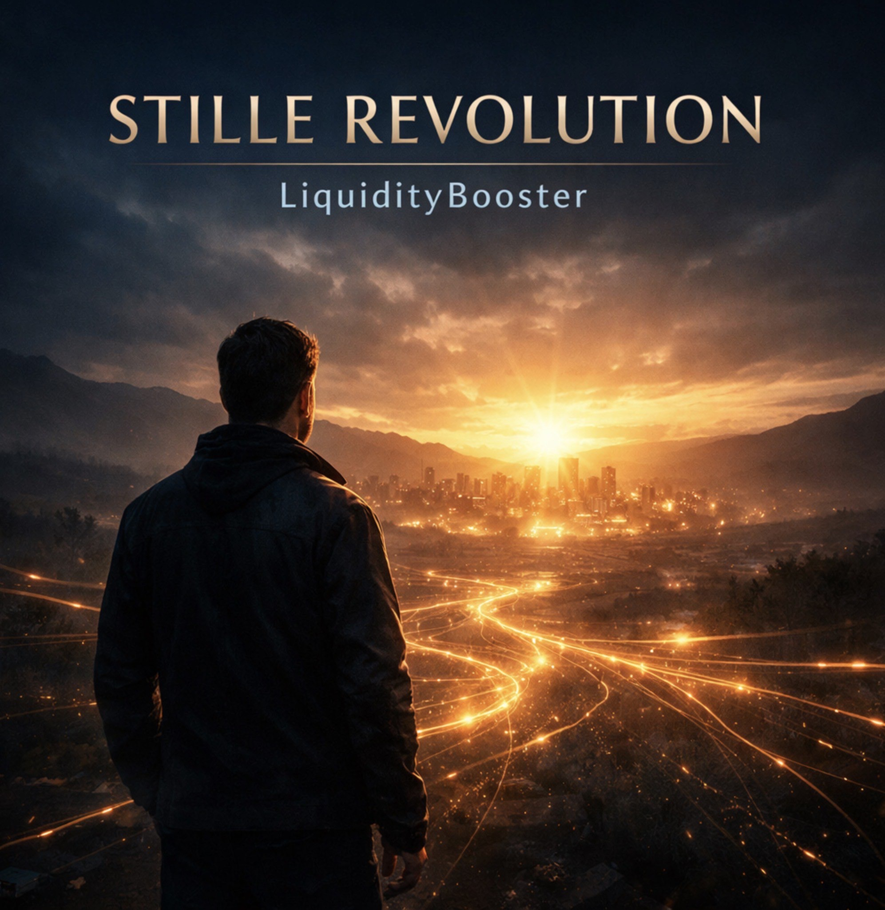
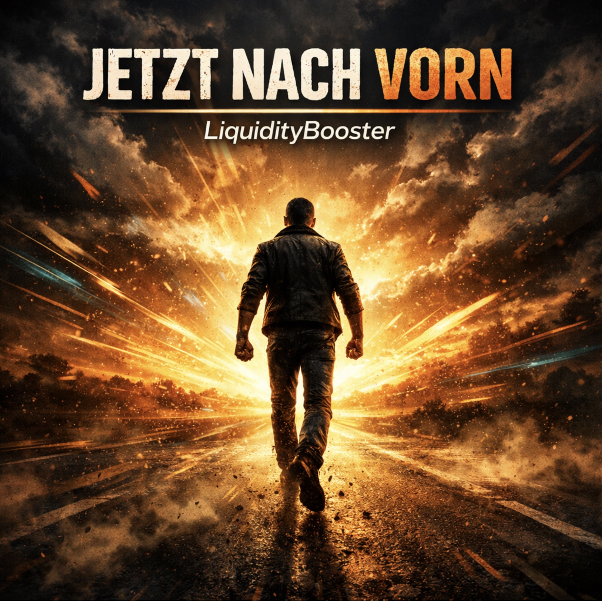
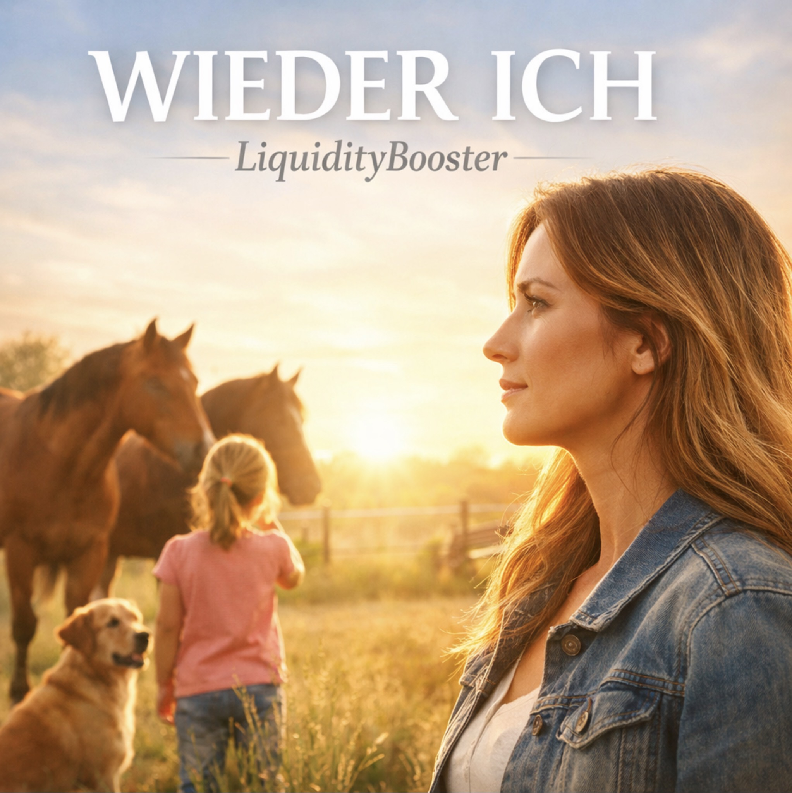
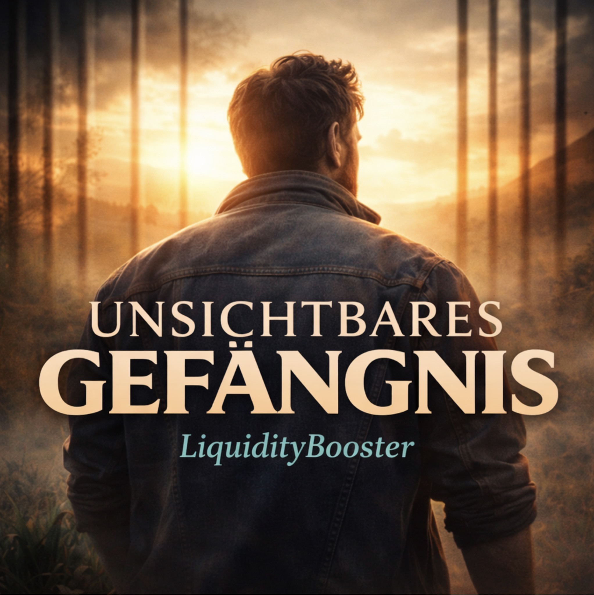

Titel 1
Stille Revolution
Ein Song über Bewusstsein, Klarheit und inneres Erwachen.
Der erste Titel eröffnet das Album mit einem nach innen gerichteten Blick. Im Mittelpunkt stehen Wahrnehmung, Haltung und der Moment, in dem Veränderung nicht zuerst außen, sondern im Inneren beginnt.
Lyrics · Stille Revolution
Wir sind aufgewachsen in einem System, das uns lehrt zu funktionieren, nicht zu verstehen. Wir arbeiten, zahlen, hoffen und wundern uns, warum das Gefühl von Freiheit trotzdem ausbleibt. Doch das Spiel ändert sich, sobald du beginnst, Fragen zu stellen. Finanzielle Souveränität bedeutet mehr, als Geld zu besitzen. Es ist die Kunst, das eigene Leben wieder selbst zu führen. Wissen befreit. Verantwortung verwandelt. Bewusstsein verändert alles. Nicht laut. Nicht aggressiv. Sondern klar. Still. Und konsequent. Wir träumen nicht von morgen, wir bauen es schon heut. Mit jedem klaren Schritt nach vorn, mit jedem, der sich neu befreit. Nicht das, was irgendwo gedruckt wird, zeigt uns, was wirklich zählt. Sondern das, was tief in Menschen an Haltung und an Wahrheit lebt. Wenn Wissen wieder geteilt wird, wenn Angst nicht länger führt, dann beginnt in stillen Herzen etwas, das die Zukunft spürt. Das ist die stille Revolution, sie beginnt in uns, sie wächst im Tun. Für Freiheit statt Angst, für Klarheit statt Warten, für ein Leben, das wir selber gestalten. LiquidityBooster trägt den Schritt, wenn aus Erkenntnis Bewegung wird. Mit Vertrauen im Blick und Verantwortung im Herz, wird aus dem Alten ein neuer Wert. Erfolg ist nicht das große Zeichen, nicht Glanz, nicht Macht, nicht Schein. Erfolg ist, wenn ein Mensch erkennt: Ich darf wieder ich selber sein. Gemeinschaft wächst nicht aus Verträgen, nicht aus Druck und nicht aus Pflicht. Sie wächst dort, wo Menschen ehrlich sagen: Ich seh dich. Und ich vergesse dich nicht. Wenn aus Verwirrung Klarheit wird, wenn aus Warten Handlung spricht, dann trägt dich eine neue Richtung in ein anderes Licht. Das ist die stille Revolution, sie beginnt in uns, sie wächst im Tun. Für Freiheit statt Angst, für Klarheit statt Warten, für ein Leben, das wir selber gestalten. LiquidityBooster trägt den Schritt, wenn aus Erkenntnis Bewegung wird. Mit Vertrauen im Blick und Verantwortung im Herz, wird aus dem Alten ein neuer Wert. Still. Klar. Bewusst. LiquidityBooster. Die stille Revolution in Bewegung.

Titel 2
Jetzt nach vorn
Ein Song über Bewegung, Mut und Aufbruch.
Der zweite Titel übersetzt innere Klarheit in Dynamik. Aus Erkenntnis wird Bewegung, aus Richtung wird Entschlossenheit, und aus Stillstand entsteht der Impuls, nach vorn zu gehen.
Lyrics · Jetzt nach vorn
Was still begonnen hat, steht jetzt auf. Kein Warten mehr. Kein Zurück. Jetzt nach vorn: Was still begonnen hat, steht jetzt auf. Kein Warten mehr. Kein Zurück. Jetzt nach vorn. Lang genug nur zugeseh’n, lang genug im Kreis gedreht. Lang genug auf irgendwen und auf irgendwann gesetzt. Doch jetzt brennt etwas in uns, das sich nicht mehr halten lässt. Und was einmal Hoffnung spürt, geht nach vorn und gibt den Rest. Ein Schritt wird zum Signal, ein Blick wird zur Idee. Und aus dem, was gestern still war, wird der Aufbruch, der jetzt steht. Jetzt nach vorn, jetzt ist die Zeit, jetzt wird aus dem Traum Wirklichkeit. Hoch hinaus und nicht zurück, Schritt für Schritt in neues Glück. Für Freiheit, für Klarheit, für ein Leben, das sich wirklich lohnt. LiquidityBooster trägt den Aufbruch, weil die Zukunft nicht mehr wartet, sondern kommt. Wir geh’n nicht mehr durch alte Türen, die uns immer kleiner mach’n. Wir geh’n raus in neue Wege, die uns wieder größer machen. Nicht mehr halten, nicht mehr zweifeln, nicht mehr warten, bis was fällt. Denn wer einmal aufrecht losgeht, trägt Bewegung in die Welt. Ein Herz schlägt wie ein Zeichen, ein Ruf zieht Kreise weit. Und aus dem, was erst verborgen war, wird jetzt Aufbruch, wird jetzt Zeit. Jeder Morgen kann jetzt starten mit mehr Feuer als zuvor. Denn wir tragen nicht nur Hoffnung, wir tragen Zukunft jetzt empor. Was uns hielt, verliert an Stärke, was uns ruft, wird immer klarer. Und aus tausend kleinen Schritten wird der Weg nach vorne wahrer. Ein Schritt wird zum Versprechen, ein Weg wird sichtbar weit. Und aus der stillen Revolution wird jetzt lebendige Zeit. Jetzt nach vorn, jetzt ist die Zeit, jetzt wird aus dem Traum Wirklichkeit. Hoch hinaus und nicht zurück, Schritt für Schritt in neues Glück. Für Freiheit, für Klarheit, für ein Leben, das sich wirklich lohnt. LiquidityBooster trägt den Aufbruch, weil die Zukunft nicht mehr wartet, sondern kommt. Jetzt nach vorn, jetzt geht es los, raus aus dem Alten, der Moment ist groß. Was in uns brennt, trägt uns hinauf, und wir hör’n nicht auf, wir dreh’n auf. Jetzt nicht warten. Jetzt nicht klein. Jetzt nach vorn. Jetzt gemeinsam. LiquidityBooster. Und wir gehen los.
Titel 3
Der nächste Schritt
Ein Song über Orientierung und einen konkreten Anfang.
Der dritte Titel macht aus Aufbruch eine greifbare Handlung. Er zeigt, dass Entwicklung nicht alles auf einmal braucht, sondern oft mit einem klaren, machbaren nächsten Schritt beginnt.
Lyrics · Der nächste Schritt
Aus der stillen Revolution wurde endlich klare Sicht. Und aus dem Ruf, nach vorn zu geh’n, wird jetzt ein Schritt mit mehr Gewicht. Nicht noch mehr reden, nicht noch mehr Last. Nicht alles wissen, nicht alles auf einmal. Denn oft beginnt das, was uns trägt, ganz klein und doch genau richtig. Der nächste Schritt ist jetzt bereit, nicht kompliziert, sondern klar und weit. Club-Mitglied werden, losgeh’n, seh’n, und dann den Weg ganz einfach weiterempfehlen. Nicht alles tragen, nicht alles erklär’n. Ein klarer Start kann Zukunft vermehr’n. LiquidityBooster zeigt den Weg, der für Menschen wirklich geht. Was klein beginnt und machbar bleibt, ist oft genau das, was dich weiterträgt. Viele wollen, viele spüren, doch zu viel nimmt ihnen Kraft. Nicht der Wille ist das Problem, sondern wenn man es zu schwer gemacht. Darum zählt hier nicht das Große, nicht die Rolle als Experte schon. Sondern erst die Mitgliedschaft im Club, als nächster Schritt mit echter Funktion. Wer den Anfang weitergibt, muss nicht alles selber zieh’n. Nur einfach zeigen, wo es losgeht, damit auch andre leichter weitergeh’n. Stille Revolution war das Erwachen. Jetzt nach vorn war Aufbruch pur. Und was daraus am Ende wächst, braucht einen Schritt mit klarer Spur. Club-Mitgliedschaft öffnet Türen. Einfach starten, einfach geh’n. Und wer den Anfang weiterreicht, hilft dem Nächsten, mehr zu seh’n. Der nächste Schritt ist jetzt bereit, nicht kompliziert, sondern klar und weit. Club-Mitglied werden, losgeh’n, seh’n, und dann den Weg ganz einfach weiterempfehlen. Nicht alles tragen, nicht alles erklär’n. Ein klarer Start kann Zukunft vermehr’n. LiquidityBooster zeigt den Weg, der für Menschen wirklich geht. Aus stiller Revolution wird jetzt ein Schritt, der Menschen weiterführt und Freiheit lebt.

Titel 4
Wieder ich
Ein Song über Sehnsucht, Verantwortung und Hoffnung.
Dieser Titel bringt die persönliche und emotionale Ebene ins Album. Er verbindet Nähe, Tragen, Müdigkeit und den Wunsch, trotz allem wieder näher zu sich selbst zu finden.
Lyrics · Wieder ich
Manche tragen so viel, dass niemand mehr fragt, wer sie eigentlich trägt. Abends am Tisch, wenn das Kind endlich schläft, sitzt Anna noch wach in der kleinen Wohnung. Zu wenig Platz, zu wenig Luft, und morgen wieder dieselbe Spannung. Erst das Kind, dann die Pferde, dann der Hund, erst alle andern, dann vielleicht mal sie. Die eignen Wünsche ganz nach hinten, weil Liebe trägt — doch oft vergisst sie nie. Sie hält alles zusammen, damit es irgendwie noch reicht. Und keiner sieht, wie schwer es wird, wenn das eigne Herz ganz leise weicht. Zu oft nur Pflicht. Zu oft nur stark. Zu oft für alle da und selbst kaum noch da. Und ich will wieder ich sein, wieder atmen, wieder spür’n. Nicht nur tragen, nicht nur warten, sondern endlich eine neue Richtung fühl’n. Ich will wieder ich sein, auch wenn der Weg noch leise spricht. LiquidityBooster war der Funke, und in mir ging wieder Licht an. Dann kam kein Lärm und keine große Show, nur dieser Satz: Schau’s dir einfach an. Kein Druck, kein Ziehen, kein leeres Reden, nur ein Gedanke, der was ändern kann. Zwanzig Cent am Tag — und plötzlich war da nicht mehr nur dieselbe Wand. Nicht die Lösung für das Ganze, doch ein Anfang, den sie greifen kann. Nicht alles wissen. Nicht alles tragen. Nicht gleich die ganze Welt erklär’n. Nur ein erster Schritt — und auf einmal beginnt sich etwas in ihr umzudreh’n. Kein falscher Glanz. Kein lautes Spiel. Nur endlich etwas, das wirklich geht. Und ich will wieder ich sein, wieder atmen, wieder spür’n. Nicht nur tragen, nicht nur warten, sondern endlich eine neue Richtung fühl’n. Ich will wieder ich sein, auch wenn der Weg noch leise spricht. LiquidityBooster war der Funke, und in mir ging wieder Licht an. Erst die Mitgliedschaft, dann erste Schritte, erste Gespräche, ehrlich und klar. Nicht alles wissen, nicht alles erklären, nur zeigen, wo ein Anfang war. Und auf einmal greifen Dinge, die sie so lange nicht mehr gespürt. Ein kleines eigenes Stück von Freiheit, das sie wieder näher zu sich führt. Mehr Vertrauen. Mehr Verstehen. Mehr Blick nach vorn statt nur besteh’n. Und aus dem, was erst so klein war, lernt sie langsam wieder aufzusteh’n. Ich wollte nicht glänzen. Ich wollte nur Luft. Ich wollte nicht kämpfen bis tief in die Nacht. Ich wollte nur einmal nicht alles verschieben. Nicht jeden Wunsch opfern, nicht immer nur Pflicht. Für mein Kind. Für meine Tiere. Für alles, was ich liebe. Hab ich mich selbst viel zu oft ganz leise aufgegeben. Doch irgendwo unter all dem war immer noch ich. Und vielleicht war genau das der Anfang zurück ins Licht. Und ich will wieder ich sein, wieder atmen, wieder spür’n. Nicht nur tragen, nicht nur warten, sondern endlich eine neue Richtung fühl’n. Ich will wieder ich sein, auch wenn der Weg noch leise spricht. LiquidityBooster war der Funke, und in mir ging wieder Licht an. Und was gestern nur Verzicht war, wird heute Stück für Stück zu Kraft. Nicht weil plötzlich alles leicht wird, sondern weil mein Herz wieder Hoffnung hat.

Titel 5
Unsichtbares Gefängnis
Ein Song über Druck, innere Enge und Hoffnung.
Der fünfte Titel öffnet eine ruhigere, tiefere Atmosphäre. Er beschreibt innere Spannung, die viele Menschen kennen, und die erste Ahnung, dass daraus wieder ein Weg entstehen kann.
Lyrics · Unsichtbares Gefängnis
Jeden Morgen aufsteh’n und funktionieren, wie man es immer schon getan hat. Draußen wirkt noch alles ganz normal, doch innen fühlt sich alles enger an. Nach außen stark, nach innen müde, zu viel Verantwortung Tag für Tag. Und jeder sieht nur, dass man durchhält, doch keiner, was es wirklich mit einem macht. Was einmal leicht war, zieht nach unten, und selbst der Schlaf bringt keine Ruh’. So sieht ein unsichtbares Gefängnis aus, und langsam geht dir innerlich was zu. Unsichtbares Gefängnis, nah und doch von außen leer. Gitterstäbe ohne Eisen, Druck im Kopf wird immer mehr. Unsichtbares Gefängnis, wenn man viel zu lang nur funktioniert. Doch irgendwo beginnt die Frage, ob ein anderer Weg noch existiert. Und genau dort fängt es auch an, nicht draußen, sondern tief in dir. Wenn still in dir etwas aufsteht, das sagt: So bleib ich nicht mehr hier. Die stille Revolution beginnt, wenn du dich selbst nicht mehr verrätst. Wenn du nicht länger nur noch trägst, sondern wieder einen Ausweg suchst. Und hier wird LiquidityBooster mehr als nur ein Name im Wind. Sondern eine Brücke aus dem Inneren zu einem Schritt, den Menschen wirklich geh’n. Nicht alles auf einmal. Nicht alles perfekt. Nicht alles erklären. Nicht alles allein. Doch ein klarer Anfang kann den Ausbruch leichter machen. Weil aus der stillen Revolution ein echter nächster Schritt entsteht. Unsichtbares Gefängnis war nie aus Stein gebaut. Es war aus Druck, aus Pflicht, aus Angst und viel zu langem Durchhalt’n. Unsichtbares Gefängnis verliert zum ersten Mal an Macht. Weil stille Revolution im Inneren den Wunsch nach Veränderung entfacht. Und LiquidityBooster macht den Ausbruch leichter, Schritt für Schritt. Nicht weil plötzlich alles leicht wird, sondern weil du endlich wieder Richtung spürst.
Titel 6
Die Rückeroberung der eigenen Souveränität
Ein Song über Buch, Aufrichtung und neue Orientierung.
Der sechste Titel führt die Musikreise zu ihrem thematischen Höhepunkt. Im Zentrum stehen Klarheit, Bewusstwerdung und der Gedanke, dass ein neuer Blick auch neue Richtung eröffnen kann.
Lyrics · Die Rückeroberung der eigenen Souveränität
Dies ist kein Angriff. Kein Tribunal. Kein Ruf nach Feindbildern. Dies ist der Versuch, sichtbar zu machen, was viele spüren und kaum benennen können. Wir leben in Tagen, die bequemer wirken und gleichzeitig enger sind. Alles läuft schneller, alles wird digitaler, doch vieles hängt an Bedingungen, die wir nicht selbst bestimmt haben. Und Freiheit steht noch auf dem Papier, doch im Alltag wird sie verhandelt. Mit Regeln. Mit Zugängen. Mit Plattformen. Mit Zwängen, die niemand laut erklären muss. Zu viele sind müde. Nicht weil sie schwach sind. Sondern weil sie spüren: Etwas stimmt nicht. Unsichtbare Schalter halten Leben in der Hand. Geld und Sichtbarkeit, Zugang, Regeln, Gegenwind im Land. Und die stille Revolution beginnt nicht mit Geschrei. Sie beginnt im klaren Blick: So wie es ist, bleibt es nicht. Nach vorn, nicht tiefer in die Enge. Nach vorn, zurück in Würde und Gewicht. LiquidityBooster trägt den Funken, wenn aus Erkenntnis Richtung spricht. Viele sagen nur noch leise: Ich hab keine Lust mehr auf Diskussionen. Man muss heute echt aufpassen. Man weiß nicht mehr, was man glauben soll. Das klingt erst klein, doch genau darin liegt die Wahrheit. Denn es geht nicht nur um Politik. Es geht darum, wie Menschen innerlich stehen. Und viele stehen nicht mehr aufrecht. Nicht weil sie schlecht sind. Sondern weil sie müde sind. Müde vom Tempo. Müde vom Druck. Müde davon, bei jedem Thema in Lager gedrückt zu werden. Empörung ist laut. Doch Klarheit ist stärker. Denn nur was du benennen kannst, kannst du auch verändern. Unsichtbare Schalter halten Leben in der Hand. Geld und Sichtbarkeit, Zugang, Regeln, Gegenwind im Land. Und die stille Revolution beginnt nicht mit Geschrei. Sie beginnt im klaren Blick: So wie es ist, bleibt es nicht. Nach vorn, nicht tiefer in die Enge. Nach vorn, zurück in Würde und Gewicht. LiquidityBooster trägt den Funken, wenn aus Erkenntnis Richtung spricht. Dieses Buch ist keine Waffe. Es ist ein Licht. Keine Parole. Kein Lager. Kein Ruf nach blinder Wut. Es zeigt die Mechanik. Die Anreize. Die Schalter. Die stille Form von Macht. Und genau dort beginnt Souveränität: Nicht im Schreien. Nicht im Spalten. Sondern in dem Moment, in dem ein Mensch erkennt: Ich will wieder wählen können. Unsichtbare Schalter verlieren Macht, wenn du sie siehst. Wenn du verstehst, warum du dich so oft in Enge drehst. Und die stille Revolution beginnt zuerst in dir. Aus Bewusstwerdung wächst Bewegung, aus Bewegung wächst ein neuer Weg zu dir. Nach vorn, zurück zur Souveränität. Nach vorn, weil Klarheit wieder atmen lässt. LiquidityBooster baut die Brücke, wenn du nicht nur siehst, sondern den nächsten Schritt auch gehst. Was uns klein hielt, muss nicht bleiben. Was uns müde macht, ist nicht das Ende. Denn aus stillem Erwachen wird ein Weg, der wieder aufrecht stehen lässt.
Titel 7 · Finale
Wir gehen jetzt los
Der finale Song stellt die entscheidende Frage: Bleibt es bei Gedanken – oder wird daraus eine echte Entscheidung?
Der siebte Titel hebt sich bewusst als Abschluss hervor. Er bündelt die Linie des Albums und führt sie zu einem Punkt, an dem Zuhören nicht mehr nur Begleitung ist, sondern zur inneren Frage wird, ob jetzt ein eigener Schritt folgen soll.
Lyrics · Wir gehen jetzt los
Aus der stillen Revolution wächst die Wahrheit Stück für Stück, aus Erkenntnis wird Bewegung, und der Blick geht nicht zurück. Jeder Mensch hat es in Händen, was er heute aus sich macht, ob er weiter still verharrt oder neu im Herzen erwacht. Der Mensch steht doch im Mittelpunkt, doch so vieles hält ihn klein, Komfort und falsche Sicherheiten laden still zum Schlafen ein. Was befreien sollte, fesselt wie ein unsichtbares Netz, doch der Mut, wieder aufzustehen, sprengt die alten Grenzen jetzt. Tief in uns lebt noch die Sehnsucht, dass das nicht schon alles war, dass noch Wege vor uns liegen, dass das Morgen auf uns wartet, klar. Wenn aus Mut und Entschlossenheit wieder Hoffnung in uns brennt, wenn die stille Revolution endlich ihren Namen nennt, dann geh’n wir Schritt für Schritt nach vorne, weil Gemeinschaft Zukunft bringt. LiquidityBooster ist der erste Schritt, weil das Erwachen in uns singt. Es sind nicht nur die großen Worte, nicht nur Kampf und Widerstand, es sind kleine echte Schritte, die uns führen Hand in Hand. Denn aus Klarheit wächst der Tatendrang, aus dem Tatendrang ein Ziel, und aus einem neuen Morgen wird dann mehr als nur Gefühl. Jeder kann empfehlen, jeder kann beginnen, jeder erste Schritt trägt schon Zukunft in sich drin. Jeder kann empfehlen, wenn er Klarheit in sich spürt, und aus der stillen Revolution wird ein Weg, der weiterführt. Wenn aus Mut und Entschlossenheit wieder Hoffnung in uns brennt, wenn die stille Revolution endlich ihren Namen nennt, dann geh’n wir Schritt für Schritt nach vorne, weil Gemeinschaft Zukunft bringt. LiquidityBooster ist der erste Schritt, weil das Erwachen in uns singt. Was einmal in dir wach geworden ist, lässt sich nicht mehr zurückdrängen. Was du erkannt hast, will gelebt werden. Aus der stillen Revolution wird Klarheit. Aus Klarheit wird Mut. Aus Mut wird Bewegung. Aufbruch. Nach vorn. Erster Schritt. Empfehlen. Aufbruch nach vorn, der erste Schritt in ein finanziell souveränes Leben
Die Albumlinie
Als Ganzes entfaltet das Album eine klare Abfolge: Wahrnehmung, Bewegung, Orientierung, persönliche Tiefe, Hoffnung, Aufrichtung und am Ende die bewusste Entscheidung.
So entsteht aus sieben einzelnen Titeln ein zusammenhängender Bogen, der unterschiedliche Stimmungen verbindet und im Finale die Frage offenlegt, ob aus Erkenntnis nun wirkliche Bewegung werden soll.
„Sieben Titel. Eine Linie. Eine Entscheidung.“